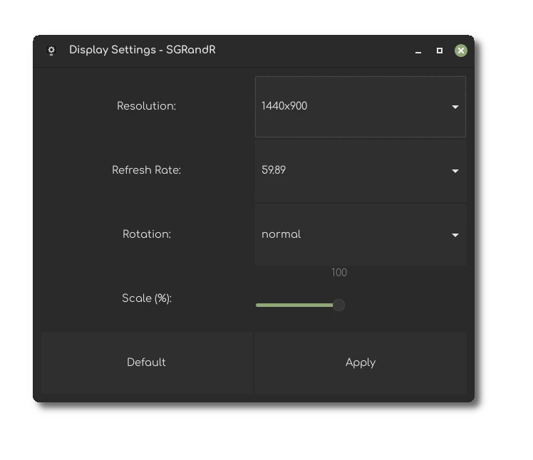
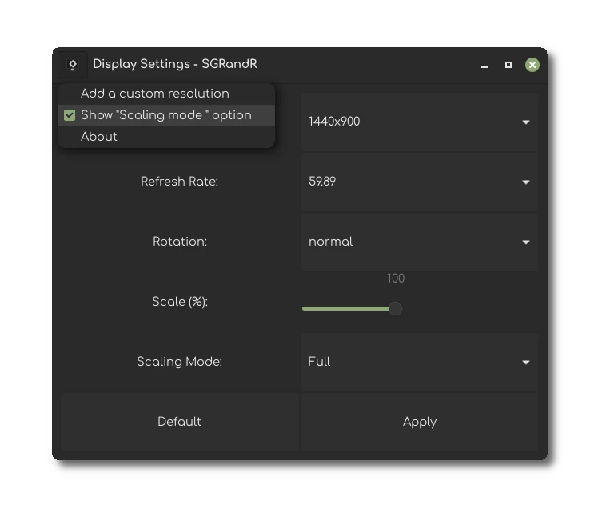
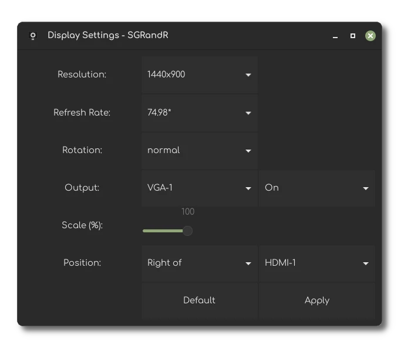
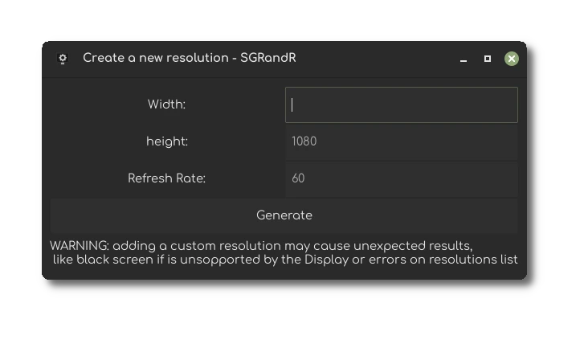
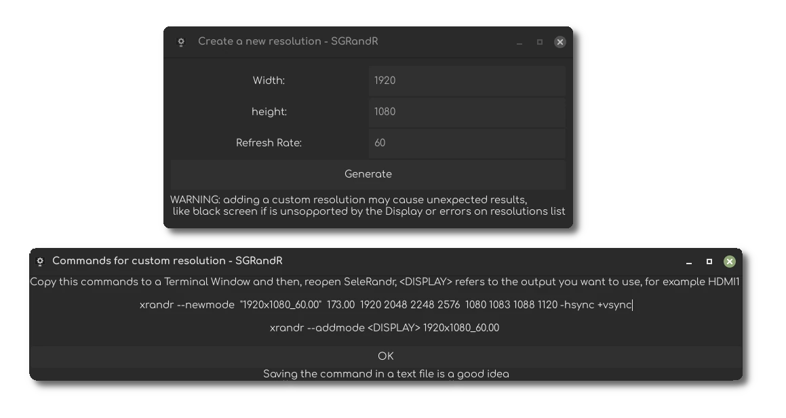

Download
Star
Issue
Follow @SGDE
SGRandR
Configure screen Resolutions, Refresh rate, rotate, on/off output and add custom resolutions
Features:
Get a List of Resolutions and change the display resolution
Get a List of Refresh Rates and change display refresh rate
Change Refresh Rate list dynamically
Button to change Rotation of display
Slider to change scale of display
Get a List of output and on/off selected output
Change Position of Display if there is more than one display
Hide Output / Position options if there is only one output
Custom Resolution Creator
Change the list of Resolutions dynamically
Download:
Clone the repo and build with make
git clone --depth 1 https://github.com/SGDE/sgrandr cd sgrandr make
Screenshots:
    